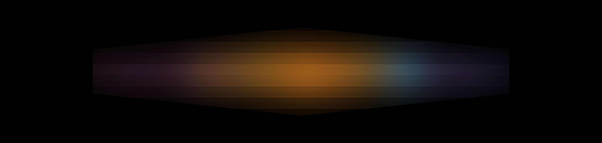
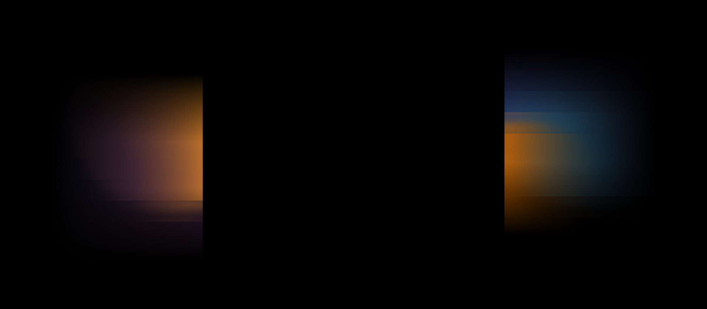
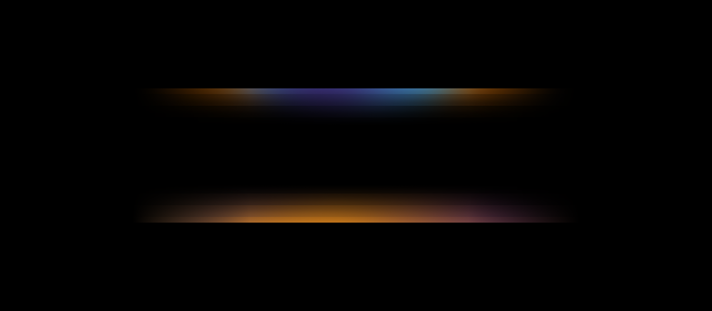

背景
定义不同定位机器的 UI 背景光影元素及布局逻辑，塑造统一且富有品质感的产品视觉体验。
1. 背景说明
针对高端、中端及低端家电设备的显示区域特点，设计了 4 种背景光影元素。每种背景元素可根据实际硬件显示区域自由调整比例和大小效果。（点击下方图片可查看完整大图）
背景 1 高端机器使用
21:5 超宽比例 (4095×975)
背景 2 中端机器使用
16:7 两侧分布 (1986×869)
背景 3 中端机器使用
16:7 上下/中心分布
背景 4 低端机器使用
21:4 渐变光晕线条 (4095×780)2. 如何使用
每个背景根据不同渠道及套系需求，可适配 7种图标形态（按机型定位划分）与 4种界面布局（无定位划分，依实际场景适配）。
背景 × 图标 × 布局 搭配逻辑矩阵
明确各档位机器与背景、图标及布局的对应规范。
| 机器定位 | 适配背景 | 适配图标形态 (7种) | 适配布局方式 (4种) |
|---|---|---|---|
| 高端机器 | 背景 1 | A1 A2 高端图标 |
所有机器通用适配 4 种布局： • 居中布局：居中1、居中2 • 靠右布局：靠右1、靠右2 |
| 中端机器 | 背景 2 背景 3 | A3 A4 中端图标 | |
| 低端机器 | 背景 4 | A5 A6 A7 低端图标 |
背景与图标、布局组合示意
通过【背景档位】与【图标形态】严格对应，叠加【4种自由布局】，构建出符合各销售渠道与不同套系场景的完美界面组合。（点击大图放大查看细节）
高端组合示例 (背景1 × A1/A2图标 × 居中/靠右布局)

中端组合示例 (背景2/3 × A3/A4图标 × 居中/靠右布局)

低端组合示例 (背景4 × A5/A6/A7图标 × 居中/靠右布局)